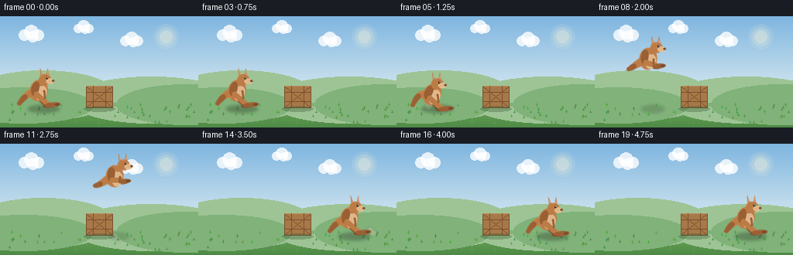
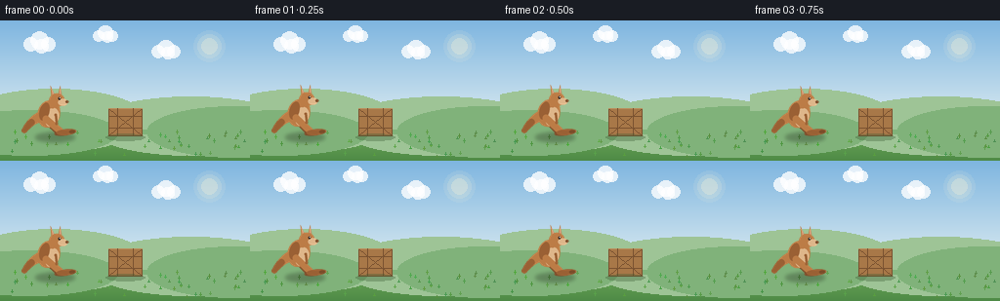
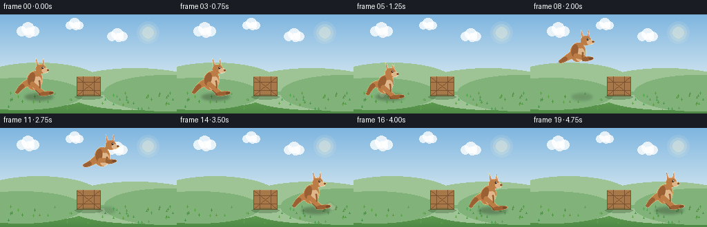
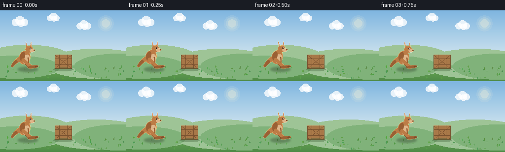

CODING AGENTS AS PIXEL WORLD MODELS
traex/Seed-2.1-Pro-0915 · dynamic_spatial_relationship_0032
点击播放 · 原生 RGB 像素
逐轮保存的候选
回放视频、检查图与代码变化。
每份候选均可单独播放。实际图片检查记录在下方工具轨迹中。
候选 01播放与检查图
点击播放 · 原生 RGB 像素


展开代码变化
--- 上一保存版本
+++ 本次保存版本
@@ -0,0 +1,331 @@
+"""Text-to-video: a kangaroo jumps from the left of a small box to its right.
+
+Pure procedural rendering (PIL + numpy), 256x144, 20 frames @ 4 fps.
+The kangaroo is drawn into a supersampled sprite, downsampled for smooth
+edges, then composited over a static background with a contact shadow.
+"""
+import math
+
+import numpy as np
+from PIL import Image, ImageDraw, ImageFilter
+
+import artifact_io
+
+W, H, N, FPS = 256, 144, 20, 4.0
+SS = 4 # supersampling factor for the kangaroo sprite
+GROUND_Y = 118
+
+# Sprite canvas (logical pixels). Foot anchor is (ANCHOR_X, ANCHOR_Y).
+SW, SH = 76, 66
+AX, AY = 36, 61
+
+# Palette
+SKY_TOP = (127, 182, 224)
+SKY_BOT = (216, 233, 240)
+HILL_FAR = (158, 196, 150)
+HILL_NEAR = (128, 178, 122)
+GRASS_TOP = (116, 174, 92)
+GRASS_BOT = (78, 138, 70)
+ROO_BODY = (188, 124, 70)
+ROO_SHADE = (154, 96, 52)
+ROO_DARK = (124, 76, 42)
+ROO_BELLY = (222, 182, 138)
+ROO_INNER_EAR = (214, 156, 128)
+BOX_LIGHT = (186, 142, 92)
+BOX_MAIN = (168, 120, 72)
+BOX_DARK = (122, 82, 48)
+
+
+# ---------------------------------------------------------------- background
+def make_background():
+ img = Image.new("RGB", (W, H))
+ px = img.load()
+ horizon = 104
+ for y in range(H):
+ if y < horizon:
+ t = y / horizon
+ c = tuple(int(SKY_TOP[i] + (SKY_BOT[i] - SKY_TOP[i]) * t) for i in range(3))
+ else:
+ t = (y - horizon) / (H - horizon)
+ c = tuple(int(GRASS_TOP[i] + (GRASS_BOT[i] - GRASS_TOP[i]) * t) for i in range(3))
+ for x in range(W):
+ px[x, y] = c
+ d = ImageDraw.Draw(img, "RGBA")
+
+ # Soft sun
+ sx, sy = 214, 26
+ for r, a in ((16, 26), (12, 40), (8, 70)):
+ d.ellipse((sx - r, sy - r, sx + r, sy + r), fill=(255, 246, 214, a))
+
+ # Clouds (rounded clusters)
+ for cloud in [((40, 22), 1.0), ((108, 14), 0.8), ((170, 30), 0.9)]:
+ (cx, cy), s = cloud
+ for dx, dy, r in [(-9, 2, 7), (0, -2, 9), (9, 2, 7), (2, 4, 7)]:
+ r *= s
+ d.ellipse((cx + dx * s - r, cy + dy * s - r,
+ cx + dx * s + r, cy + dy * s + r),
+ fill=(255, 255, 255, 200))
+
+ # Layered hills
+ d.ellipse((-40, horizon - 34, 150, horizon + 30), fill=HILL_FAR)
+ d.ellipse((90, horizon - 26, 300, horizon + 34), fill=HILL_FAR)
+ d.rectangle((0, horizon + 6, W, horizon + 10), fill=HILL_FAR)
+ d.ellipse((-60, horizon - 12, 120, horizon + 34), fill=HILL_NEAR)
+ d.ellipse((150, horizon - 16, 330, horizon + 36), fill=HILL_NEAR)
+ d.rectangle((0, horizon + 8, W, horizon + 12), fill=HILL_NEAR)
+
+ # Grass tufts, deterministic
+ rng = np.random.default_rng(7)
+ for _ in range(46):
+ x = int(rng.integers(2, W - 2))
+ y = int(rng.integers(horizon + 12, H - 2))
+ h = int(rng.integers(2, 5))
+ col = (int(rng.integers(70, 100)), int(rng.integers(140, 175)),
+ int(rng.integers(60, 85)))
+ d.line((x, y, x, y - h), fill=col)
+ d.line((x, y - h + 1, x - 1, y - h + 2), fill=col)
+ d.line((x, y - h + 1, x + 1, y - h + 2), fill=col)
+ return img
+
+
+def draw_box(img):
+ """Small wooden crate, centered at x=128, resting on the ground."""
+ d = ImageDraw.Draw(img, "RGBA")
+ x0, y0, x1, y1 = 111, 90, 145, GROUND_Y
+ d.rectangle((x0, y0, x1, y1), fill=BOX_MAIN, outline=BOX_DARK)
+ # top edge highlight / plank lines
+ d.line((x0, y0, x1, y0), fill=BOX_LIGHT)
+ d.line((x0, y0 + 8, x1, y0 + 8), fill=BOX_DARK)
+ d.line((x0, y1 - 8, x1, y1 - 8), fill=BOX_DARK)
+ d.line((x0 + 9, y0, x0 + 9, y1), fill=BOX_DARK)
+ d.line((x1 - 9, y0, x1 - 9, y1), fill=BOX_DARK)
+ # diagonal braces
+ d.line((x0 + 1, y0 + 1, x1 - 1, y1 - 1), fill=BOX_DARK)
+ d.line((x1 - 1, y0 + 1, x0 + 1, y1 - 1), fill=BOX_DARK)
+ # subtle ground contact shade
+ d.ellipse((x0 - 3, GROUND_Y - 2, x1 + 3, GROUND_Y + 5), fill=(60, 90, 50, 90))
+ return img
+
+
+# ---------------------------------------------------------------- kangaroo
+def qbez(p0, p1, p2, t):
+ mt = 1 - t
+ return (mt * mt * p0[0] + 2 * mt * t * p1[0] + t * t * p2[0],
+ mt * mt * p0[1] + 2 * mt * t * p1[1] + t * t * p2[1])
+
+
+def rotated_ellipse_points(cx, cy, rx, ry, ang, n=20):
+ ca, sa = math.cos(math.radians(ang)), math.sin(math.radians(ang))
+ pts = []
+ for i in range(n):
+ a = 2 * math.pi * i / n
+ x, y = rx * math.cos(a), ry * math.sin(a)
+ pts.append((cx + x * ca - y * sa, cy + x * sa + y * ca))
+ return pts
+
+
+def draw_kangaroo(pose):
+ """Return an RGBA sprite (logical size SW x SH) for the given pose.
+
+ pose keys: crouch, tuck, idle bob. Kangaroo faces right.
+ """
+ big = Image.new("RGBA", (SW * SS, SH * SS), (0, 0, 0, 0))
+ d = ImageDraw.Draw(big)
+ c = pose["crouch"]
+ k = pose["tuck"]
+ bob = pose["bob"]
+
+ def S(v):
+ return v * SS
+
+ def ell(cx, cy, rx, ry, fill, ang=0.0):
+ pts = [(S(x), S(y)) for x, y in
+ rotated_ellipse_points(cx, cy, rx, ry, ang)]
+ d.polygon(pts, fill=fill)
+
+ def capsule(p, q, w, fill):
+ d.line((S(p[0]), S(p[1]), S(q[0]), S(q[1])), fill=fill,
+ width=max(1, int(S(w))), joint="curve")
+ r = w / 2
+ d.ellipse((S(p[0] - r), S(p[1] - r), S(p[0] + r), S(p[1] + r)), fill=fill)
+ d.ellipse((S(q[0] - r), S(q[1] - r), S(q[0] + r), S(q[1] + r)), fill=fill)
+
+ # Body geometry
+ bcx, bcy = 30, 39 + 5 * c - 2 * bob
+ ang = 16 + 9 * c - 12 * k
+
+ # --- tail: tapered quadratic stroke behind the body ---
+ base = (bcx - 6, bcy + 2)
+ ctrl = (13 - 2 * k, 44 - 5 * c + 7 * k)
+ tip = (5, 56 - 5 * k + 2 * c)
+ prev = None
+ for i in range(13):
+ t = i / 12
+ pt = qbez(base, ctrl, tip, t)
+ wdt = 9.5 - 6.0 * t
+ col = ROO_BODY if i < 8 else ROO_SHADE
+ ell(pt[0], pt[1], wdt / 2 + 1.2, wdt / 2 + 1.0, col)
+ if prev is not None:
+ capsule(prev, pt, wdt + 1.4, col)
+ prev = pt
+ ell(tip[0], tip[1], 2.0, 1.8, ROO_SHADE)
+
+ # --- far hind leg (darker, slightly behind) ---
+ foot_y = 56 - 13 * k + 5 * c
+ hip_f = (bcx - 4, bcy + 6)
+ foot_f = (39 - 2 * k, foot_y + 1)
+ capsule(hip_f, foot_f, 6.2, ROO_DARK)
+ ell(foot_f[0] + 6 - 2 * k, foot_f[1] + 1.5, 9.5 - 2 * k, 3.0, ROO_DARK, ang=-6)
+
+ # --- body ---
+ ell(bcx, bcy, 11.5, 14.5, ROO_BODY, ang)
+ # belly patch on the front side
+ ell(bcx + 3.2, bcy + 3.5, 7.0, 10.0, ROO_BELLY, ang)
+ # back shading
+ ell(bcx - 4.5, bcy - 2.5, 5.0, 9.5, ROO_SHADE, ang)
+
+ # --- near hind leg ---
+ hip = (bcx - 3, bcy + 5)
+ foot = (41 - 3 * k, foot_y)
+ capsule(hip, foot, 7.0, ROO_BODY)
+ # long foot pointing forward
+ ell(foot[0] + 7 - 2.5 * k, foot[1] + 1.6, 10.5 - 2.5 * k, 3.2, ROO_SHADE, ang=-5)
+ ell(foot[0] + 13 - 4 * k, foot[1] + 1.2, 3.2, 2.0, ROO_DARK, ang=-5)
+
+ # --- front arm ---
+ arm_top = (bcx + 7, bcy + 1)
+ arm_bot = (bcx + 8 - 2 * k, bcy + 10 - 5 * k)
+ capsule(arm_top, arm_bot, 2.6, ROO_SHADE)
+
+ # --- head / neck ---
+ ca, sa = math.cos(math.radians(ang)), math.sin(math.radians(ang))
+ top = (bcx + (-10) * sa, bcy + (-10) * ca) # rotated "up" on body
+ neck_top = (top[0] + 6, top[1] - 1)
+ capsule((bcx + 4, bcy - 8), neck_top, 4.6, ROO_BODY)
+ hx, hy = neck_top[0] + 5, neck_top[1] - 3.5
+ hx += 1.5 * k # head tucks forward slightly in flight
+
+ # ears (drawn first so the head overlaps their bases)
+ for ex, tilt in ((-3.5, -12), (3.0, 8)):
+ ear = [(hx + ex - 2.2, hy - 3),
+ (hx + ex - 1.0 + tilt * 0.18, hy - 15),
+ (hx + ex + 2.4, hy - 3)]
+ d.polygon([(S(x), S(y)) for x, y in ear], fill=ROO_BODY)
+ inner = [(hx + ex - 0.8, hy - 4.5),
+ (hx + ex - 0.2 + tilt * 0.14, hy - 12.5),
+ (hx + ex + 1.2, hy - 4.5)]
+ d.polygon([(S(x), S(y)) for x, y in inner], fill=ROO_INNER_EAR)
+
+ ell(hx, hy, 8.0, 7.2, ROO_BODY)
+ # snout
+ ell(hx + 6.2, hy + 2.2, 5.0, 3.8, ROO_BELLY)
+ ell(hx + 10.4, hy + 1.6, 1.7, 1.5, ROO_DARK) # nose
+ # eye
+ ell(hx + 2.6, hy - 1.8, 1.3, 1.5, (40, 30, 24))
+ ell(hx + 3.0, hy - 2.3, 0.5, 0.5, (255, 255, 255))
+
+ out = big.resize((SW, SH), Image.Resampling.LANCZOS)
+ return out
+
+
+# ---------------------------------------------------------------- compose
+def shadow_layer(cx, lift):
+ """Soft contact shadow whose width/opacity shrink with jump height."""
+ layer = Image.new("RGBA", (W, H), (0, 0, 0, 0))
+ d = ImageDraw.Draw(layer)
+ h = max(0.0, -lift)
+ rx = 20 - 8 * min(1.0, h / 60.0)
+ alpha = int(95 - 55 * min(1.0, h / 60.0))
+ d.ellipse((cx - rx, GROUND_Y - 3, cx + rx, GROUND_Y + 6),
+ fill=(45, 60, 40, alpha))
+ return layer.filter(ImageFilter.GaussianBlur(2))
+
+
+def add_dust(layer, cx, side, strength, seed):
+ """Small dust puffs on takeoff / landing."""
+ if strength <= 0:
+ return
+ rng = np.random.default_rng(seed)
+ d = ImageDraw.Draw(layer)
+ for i in range(7):
+ t = i / 6
+ px = cx + side * (4 + 14 * t + rng.uniform(-2, 2))
+ py = GROUND_Y - 1 - strength * 4 * math.sin(t * math.pi) + rng.uniform(-2, 2)
+ r = 1.6 + 2.4 * t
+ a = int(150 * strength * (1 - 0.5 * t))
+ d.ellipse((px - r, py - r, px + r, py + r),
+ fill=(210, 200, 175, a))
+
+
+def pose_at(f):
+ """Return (center_x, lift, pose, dust) for frame index f."""
+ # Frames 0-3: idle on the left. 4-5: crouch anticipation.
+ # 6-14: leap (u in 0..1), arc over the box.
+ # 15: landing crouch. 16-19: settle, idle on the right.
+ x_start, x_end = 56, 201
+ bob = math.sin(f * 1.1) * 0.6
+ if f <= 3:
+ return x_start, 0.0, {"crouch": 0, "tuck": 0, "bob": bob}, None
+ if f == 4:
+ return x_start - 2, 0.0, {"crouch": 0.55, "tuck": 0, "bob": 0}, None
+ if f == 5:
+ return x_start - 4, 0.0, {"crouch": 1.0, "tuck": 0, "bob": 0}, ("back", 0.8)
+ if f <= 14:
+ u = (f - 6) / 8.0
+ s = u * u * (3 - 2 * u) # smoothstep
+ x = x_start - 4 + (x_end - (x_start - 4)) * s
+ lift = -58 * math.sin(math.pi * u)
+ tuck = math.sin(math.pi * u)
+ dust = None
+ if f == 6:
+ dust = ("back", 0.9)
+ elif f == 14:
+ dust = ("fwd", 1.0)
+ return x, lift, {"crouch": 0, "tuck": tuck, "bob": 0}, dust
+ if f == 15:
+ return x_end, 0.0, {"crouch": 0.85, "tuck": 0, "bob": 0}, ("fwd", 0.7)
+ if f == 16:
+ return x_end, 0.0, {"crouch": 0.35, "tuck": 0, "bob": 0}, None
+ return x_end, 0.0, {"crouch": 0, "tuck": 0,
+ "bob": math.sin((f - 16) * 1.0) * 0.6}, None
+
+
+def main():
+ base_bg = draw_box(make_background())
+ base_np = np.asarray(base_bg)
+ frames = []
+ for f in range(N):
+ cx, lift, pose, dust = pose_at(f)
+ frame = base_bg.copy().convert("RGBA")
+ frame.alpha_composite(shadow_layer(cx, lift))
+
+ dust_layer = Image.new("RGBA", (W, H), (0, 0, 0, 0))
+ if dust is not None:
+ where, strength = dust
+ side = -1 if where == "back" else 1
+ add_dust(dust_layer, cx + 6, side, strength, seed=100 + f)
+ frame.alpha_composite(dust_layer.filter(ImageFilter.GaussianBlur(0.6)))
+
+ roo = draw_kangaroo(pose)
+ px = int(round(cx - AX))
+ py = int(round(GROUND_Y - AY + lift))
+ frame.alpha_composite(roo, (px, py))
+
+ frames.append(np.asarray(frame.convert("RGB")))
+
+ frames = np.stack(frames).astype(np.uint8)
+
+ # Diagnostics: moving-pixel centroid vs static scene.
+ print("frame centroid_x bbox_x0..x1 moving_top")
+ for i, fr in enumerate(frames):
+ diff = np.any(fr != base_np, axis=2)
+ ys, xs = np.nonzero(diff)
+ if len(xs):
+ print(f"{i:5d} {xs.mean():10.1f} {xs.min():3d}..{xs.max():<3d} {ys.min():7d}")
+
+ artifact_io.save(frames, ".")
+ print("saved", frames.shape)
+
+
+if __name__ == "__main__":
+ main()
候选 02播放与检查图
点击播放 · 原生 RGB 像素

展开代码变化
--- 上一保存版本
+++ 本次保存版本
@@ -138,10 +138,10 @@
def S(v):
return v * SS
- def ell(cx, cy, rx, ry, fill, ang=0.0):
+ def ell(cx, cy, rx, ry, fill, ang=0.0, outline=None):
pts = [(S(x), S(y)) for x, y in
rotated_ellipse_points(cx, cy, rx, ry, ang)]
- d.polygon(pts, fill=fill)
+ d.polygon(pts, fill=fill, outline=outline)
def capsule(p, q, w, fill):
d.line((S(p[0]), S(p[1]), S(q[0]), S(q[1])), fill=fill,
@@ -200,19 +200,19 @@
# --- head / neck ---
ca, sa = math.cos(math.radians(ang)), math.sin(math.radians(ang))
top = (bcx + (-10) * sa, bcy + (-10) * ca) # rotated "up" on body
- neck_top = (top[0] + 6, top[1] - 1)
+ neck_top = (top[0] + 7, top[1] - 3)
capsule((bcx + 4, bcy - 8), neck_top, 4.6, ROO_BODY)
- hx, hy = neck_top[0] + 5, neck_top[1] - 3.5
+ hx, hy = neck_top[0] + 5, neck_top[1] - 4
hx += 1.5 * k # head tucks forward slightly in flight
# ears (drawn first so the head overlaps their bases)
- for ex, tilt in ((-3.5, -12), (3.0, 8)):
+ for ex, tilt in ((-3.8, -14), (3.2, 9)):
ear = [(hx + ex - 2.2, hy - 3),
- (hx + ex - 1.0 + tilt * 0.18, hy - 15),
+ (hx + ex - 1.0 + tilt * 0.18, hy - 16),
(hx + ex + 2.4, hy - 3)]
d.polygon([(S(x), S(y)) for x, y in ear], fill=ROO_BODY)
inner = [(hx + ex - 0.8, hy - 4.5),
- (hx + ex - 0.2 + tilt * 0.14, hy - 12.5),
+ (hx + ex - 0.2 + tilt * 0.14, hy - 13.5),
(hx + ex + 1.2, hy - 4.5)]
d.polygon([(S(x), S(y)) for x, y in inner], fill=ROO_INNER_EAR)
@@ -221,11 +221,21 @@
ell(hx + 6.2, hy + 2.2, 5.0, 3.8, ROO_BELLY)
ell(hx + 10.4, hy + 1.6, 1.7, 1.5, ROO_DARK) # nose
# eye
- ell(hx + 2.6, hy - 1.8, 1.3, 1.5, (40, 30, 24))
- ell(hx + 3.0, hy - 2.3, 0.5, 0.5, (255, 255, 255))
-
- out = big.resize((SW, SH), Image.Resampling.LANCZOS)
- return out
+ ell(hx + 2.6, hy - 1.8, 1.4, 1.6, (40, 30, 24))
+ ell(hx + 3.0, hy - 2.3, 0.55, 0.55, (255, 255, 255))
+
+ # Downscale in premultiplied-alpha space to avoid dark edge fringes.
+ arr = np.asarray(big, dtype=np.float32)
+ arr[..., :3] *= arr[..., 3:4] / 255.0
+ small = Image.fromarray(arr.astype(np.uint8), "RGBA").resize(
+ (SW, SH), Image.Resampling.LANCZOS)
+ a = np.asarray(small, dtype=np.float32)
+ alpha = a[..., 3:4]
+ rgb = np.zeros_like(a[..., :3])
+ np.divide(a[..., :3] * 255.0, np.maximum(alpha, 1.0),
+ out=rgb, where=alpha > 1.0)
+ out = np.dstack([np.clip(rgb, 0, 255), alpha]).astype(np.uint8)
+ return Image.fromarray(out, "RGBA")
# ---------------------------------------------------------------- compose
候选 03播放与检查图
点击播放 · 原生 RGB 像素


展开代码变化
--- 上一保存版本
+++ 本次保存版本
@@ -227,7 +227,7 @@
# Downscale in premultiplied-alpha space to avoid dark edge fringes.
arr = np.asarray(big, dtype=np.float32)
arr[..., :3] *= arr[..., 3:4] / 255.0
- small = Image.fromarray(arr.astype(np.uint8), "RGBA").resize(
+ small = Image.fromarray(arr.astype(np.uint8)).resize(
(SW, SH), Image.Resampling.LANCZOS)
a = np.asarray(small, dtype=np.float32)
alpha = a[..., 3:4]
@@ -235,7 +235,7 @@
np.divide(a[..., :3] * 255.0, np.maximum(alpha, 1.0),
out=rgb, where=alpha > 1.0)
out = np.dstack([np.clip(rgb, 0, 255), alpha]).astype(np.uint8)
- return Image.fromarray(out, "RGBA")
+ return Image.fromarray(out)
# ---------------------------------------------------------------- compose
可观测工具轨迹
实际执行的命令与返回图片。
命令 1exit 0
/bin/bash -lc 'ls -la && cat prompt.txt && echo "=====RULES=====" && cat GENERATION_RULES.json 2>/dev/null; cat GENERATION_RULES.md 2>/dev/null && echo "=====SPEC=====" && cat task_spec.json'
命令 2exit 0
/bin/bash -lc 'cat artifact_io.py && echo "=====PLAYER=====" && cat player_template.html'
命令 3exit 0
/bin/bash -lc 'cd "$(pwd)" && python generate.py'
命令 4exit 0
/bin/bash -lc "python - <<'EOF'
import numpy as np
from PIL import Image
def ascii_art(fi):
im = np.asarray(Image.open(f\"frames/{fi:02d}.png\").convert(\"L\"))
# crop central vertical band, downsample x by 4, y by 3
h,w = im.shape
out=[]
for y in range(0,h,3):
row=\"\"
for x in range(0,w,3):
block=im[y:y+3,x:x+3]
v=block.mean()
row += \" .:-=+*#%@\"[min(9,int((255-v)/26))]
out.append(row)
return \"\\n\".join(out)
for fi in (0,5,10,14,19):
print(f\"--- frame {fi} ---\")
print(ascii_art(fi))
EOF"命令 5exit 0
/bin/bash -lc "python - <<'EOF'
import numpy as np
from PIL import Image
import generate as g
def sprite_ascii(pose):
im = np.asarray(g.draw_kangaroo(pose).convert(\"L\"))
h,w = im.shape
chars=\"@%#*+=-:. \"
lines=[]
for y in range(0,h,2):
row=\"\"
for x in range(0,w,1):
v=im[y:y+2,x].mean()
row += chars[min(9,int((255-v)/26))]
lines.append(row.rstrip())
return \"\\n\".join(lines)
for name,pose in [(\"idle\",{\"crouch\":0,\"tuck\":0,\"bob\":0}),
(\"crouch\",{\"crouch\":1,\"tuck\":0,\"bob\":0}),
(\"apex\",{\"crouch\":0,\"tuck\":1,\"bob\":0})]:
print(f\"===== {name} =====\")
print(sprite_ascii(pose))
EOF"命令 6exit 0
/bin/bash -lc "python generate.py && python - <<'EOF'
import numpy as np
from PIL import Image
import generate as g
def sprite_ascii(pose):
im = np.asarray(g.draw_kangaroo(pose).convert(\"L\"))
chars=\"@%#*+=-:. \"
lines=[]
for y in range(0,im.shape[0],2):
row=\"\"
for x in range(0,im.shape[1]):
v=im[y:y+2,x].mean()
row += chars[min(9,int((255-v)/26))]
lines.append(row.rstrip())
return \"\\n\".join(lines)
print(sprite_ascii({\"crouch\":0,\"tuck\":0,\"bob\":0}))
# fringe check: any nearly-black semi-transparent edge pixels?
sp = np.asarray(g.draw_kangaroo({\"crouch\":0,\"tuck\":0,\"bob\":0}))
edge = sp[(sp[...,3]>10)&(sp[...,3]<245)]
print(\"edge pixels:\", edge.shape[0], \"min edge rgb:\", edge[:,:3].min(axis=0) if len(edge) else None)
EOF"命令 7exit 0
/bin/bash -lc "python generate.py 2>&1 && ls -la && ls frames | head -25 && python - <<'EOF'
import numpy as np
d=np.load(\"pixels.npz\")
p=d[\"pixels\"]
print(\"tensor:\",p.shape,p.dtype) # H,W,N packed RGB
# decode a few frames and check relationship to box (box x 111..145)
frames=np.zeros((20,144,256,3),np.uint8)
for i in range(20):
v=p[:,:,i].astype(np.uint32)
frames[i]=(np.stack([(v>>16)&255,(v>>8)&255,v&255],-1)).astype(np.uint8)
# orange kangaroo mask (rough): r>150, g in 80-150, b<100
for i in (0,3,4,5,6,10,14,15,19):
r,g,b=frames[i][...,0],frames[i][...,1],frames[i][...,2]
m=(r>150)&(g>70)&(g<160)&(b<105)
ys,xs=np.nonzero(m)
print(f\"f{i:2d} roo-ish x {xs.min():3d}..{xs.max():3d}, box 111..145, \"
f\"left_of_box={xs.max()<111}, right_of_box={xs.min()>145}\")
EOF"保存候选 3 份；完成命令 7 次；可验证图片返回 0 张。原始 API 响应与完整日志保留在本地。